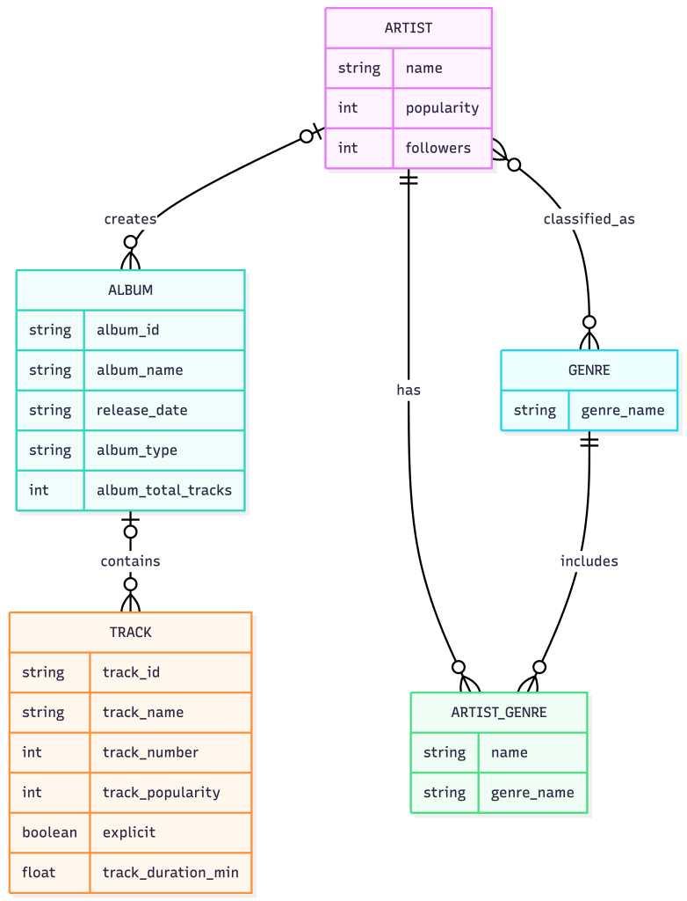

Building an ER Diagram for a Music Dataset
In Week 9, I created an ER diagram using Mermaid to represent a music dataset containing artists, albums, tracks, and genres. This task helped me better understand how raw dataset attributes can be organised into structured database entities and relationships.

I learned how to define entities with attributes and how to represent different types of relationships such as one-to-many and many-to-many. For example, one artist can create many albums, and one album can contain many tracks. I also learned that a many-to-many relationship, such as between artists and genres, requires a join table to avoid data redundancy.
Using Mermaid syntax was challenging at first because small mistakes could break the diagram. However, after testing in the live editor, I became more confident in writing correct ER diagram syntax. Visualising the dataset in diagram form made the data structure much clearer than reading it from a table or CSV file.
This exercise helped me realise the importance of data modelling before building machine learning or database systems. A well-designed structure makes data easier to manage, query, and analyse. In future projects, I would like to apply ER diagrams earlier in the design process to improve data organisation and system planning.